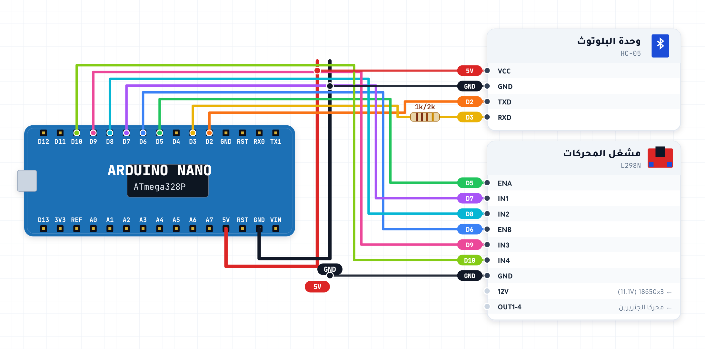

▶فيديو الشرح
دبابة صغيرة بجنزيرين تدور 360° في مكانها، يتحكم فيها الهاتف عبر البلوتوث مع تحكم في السرعة.
1المكونات
ARDUINO NANOboardوحدة البلوتوثHC-05مشغل المحركاتL298Nأسلاك توصيلJumper Wiresلوحة تجاربBreadboard
2مخطط التوصيل

اضغط على المخطط لتكبيره · نسخة SVG عالية الدقة
| القطعة | الطرف | يوصل إلى |
|---|---|---|
| وحدة البلوتوث | VCC | 5V |
| وحدة البلوتوث | GND | GND |
| وحدة البلوتوث | TXD | D2 |
| وحدة البلوتوث | RXD | D3 عبر مقاومة 1k/2k |
| مشغل المحركات | ENA | D5 |
| مشغل المحركات | IN1 | D7 |
| مشغل المحركات | IN2 | D8 |
| مشغل المحركات | ENB | D6 |
| مشغل المحركات | IN3 | D9 |
| مشغل المحركات | IN4 | D10 |
| مشغل المحركات | GND | GND |
| مشغل المحركات | 12V | 3×18650 (11.1V) |
| مشغل المحركات | OUT1-4 | محركا الجنزيرين |
3الكود
المكتبات المطلوبة (من Arduino IDE ← Sketch ← Include Library ← Manage Libraries):
- SoftwareSerial (مدمجة)
/* المستوى المتطور — المشروع 4: الروبوت المجنزر الوعر مع التحكم اللاسلكي (Arduino Nano) كتاب: 38 مشروع في شهر — لؤي النصري (@robotlouay) التوصيل: HC-05: VCC → 5V GND → GND TXD → D2 RXD ← D3 عبر مقسم جهد (1kΩ / 2kΩ) L298N: ENA → D5 IN1 → D7 IN2 → D8 (الجنزير الأيمن) ENB → D6 IN3 → D9 IN4 → D10 (الجنزير الأيسر) (انزع جمبر ENA و ENB للتحكم في السرعة) البطارية: 3 × 18650 (11.1V) → 12V في L298N ، GND مشترك ، 5V من L298N → 5V في Nano الأوامر من التطبيق: F B L R S للحركة ، و 0..9 للسرعة (q = 100%) */ #include <SoftwareSerial.h> SoftwareSerial bt(2, 3); // RX, TX const int ENA = 5, IN1 = 7, IN2 = 8; const int ENB = 6, IN3 = 9, IN4 = 10; int speedVal = 200; // 0..255 unsigned long lastCmd = 0; void track(int en, int a, int b, int dir) { // dir: 1 أمام ، -1 خلف ، 0 توقف digitalWrite(a, dir == 1); digitalWrite(b, dir == -1); analogWrite(en, dir == 0 ? 0 : speedVal); } void drive(int right, int left) { track(ENA, IN1, IN2, right); track(ENB, IN3, IN4, left); } void setup() { bt.begin(9600); Serial.begin(9600); int pins[] = {ENA, IN1, IN2, ENB, IN3, IN4}; for (int p : pins) pinMode(p, OUTPUT); drive(0, 0); } void loop() { if (bt.available()) { char c = bt.read(); lastCmd = millis(); if (c >= '0' && c <= '9') speedVal = map(c - '0', 0, 9, 80, 230); else if (c == 'q') speedVal = 255; switch (c) { case 'F': drive(1, 1); break; case 'B': drive(-1, -1); break; case 'L': drive(1, -1); break; // دوران في المكان (360°) case 'R': drive(-1, 1); break; case 'S': drive(0, 0); break; } Serial.println(c); } if (millis() - lastCmd > 1000) drive(0, 0); // أمان عند انقطاع الإشارة }
هذا المشروع يعتمد على مكتبات أو لوحات غير متوفرة في mBlock 5، لذلك نستعمل Arduino IDE. انسخ الكود من تبويب Arduino IDE.
4كيف يعمل؟
- HC-05 على SoftwareSerial (D2/D3)
- الأوامر F B L R S والأرقام للسرعة
- ENA و ENB يضبطان السرعة بالـ PWM
- توقف آلي عند انقطاع الإشارة
⚠ قبل توصيل الكهرباء: راجع كل سلك مع الجدول أعلاه، وتأكد من عدم وجود تماس بين 5V و GND. اختر اللوحة والمنفذ الصحيحين من قائمة Tools في Arduino IDE.